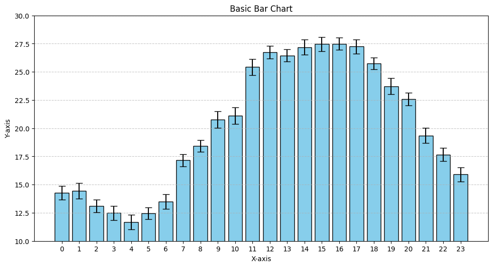

Bar Graph
1. Basic Bar Graph
# Step 1: Import Libraries
import numpy as np
import matplotlib.pyplot as plt
# Step 2: Create Sample Data
x = np.arange(24)
np.random.seed(42)
noise = np.random.uniform(-1, 1.5, size=x.shape)
y = 20 + 8 * np.sin((x - 9) * np.pi / 12) + noise
y_error = np.random.uniform(0.5, 0.75, size=x.shape)
# Step 3: Plotting the bar graph with error bars
plt.figure(figsize=(12, 6))
plt.bar(x, y, yerr=y_error, capsize=5, color='skyblue', edgecolor='black')
plt.title('Basic Bar Chart')
plt.xlabel('X-axis')
plt.ylabel('Y-axis')
plt.ylim(10,30)
plt.xticks(x)
plt.grid(axis='y', linestyle='--', alpha=0.7)
plt.show()
